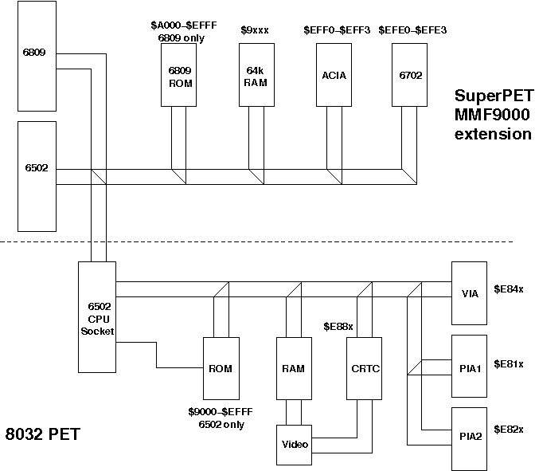
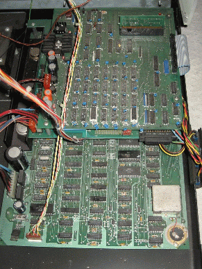

PET index - SuperPET
The SuperPET or MicroMainFrame 9000 in Europe is an add-on board to the 8032 computer (board #3). It replaces the 6502 CPU with a cable to the add-on board. On the board are the original 6502, another CPU, the 6809, a 6551 RS232 interface, 64k RAM and some 6809 ROMs.
Overview Diagram
The following diagram shows an overview on the SuperPET extensions
The additions are put onto three add-on-boards as can be seen in the photo below.
{kind=link}
(click to enlarge)
The CPU, ROM and ACIA are on the board that is directly put into the CPU socket on the original PET board. Facing the front one can see the RS232 connector. The 64k RAM is on the second layer above the CPU add-on-board. Into this memory board a very small daughter board is plugged in, containing the 6702 chip (in the photo one can only see the back of the small PCB).
Description
The 64k RAM are mapped into the $9*** address space, with a bank select register in the I/O area providing the necessary uppermost address digit.
As there is some additional I/O in $EFE0-$EFFF the boards should only be used in 8032 PETs with a 2k $E*** ROM, that leave $E900-$EFFF open address (boards #3a, #3b).
A complete schematics including parts lists and instructions to build it into your PET can be found in the links section.
As the schematics is all we have at this time, all information below is derived by me, and comes completely without warranty.
- The board has a 6502 and a 6809 directly tied together with address, data and control lines. How does it work? If the 6809 is active, the 6502 is simply powered down! If the 6502 is active, the 6809 can tri-state its bus lines. So both should have the same memory map if not dependend on the CPU select. The 6502 Phi2 is not used, instead the E line of the 6809 is always used as system clock. As both CPU clocks are in phase, this should not do that much. Timing doesn't seem to be too restrictive here, but you never read things like that in the specs...
- The CPU can be hard-wired (jumper) to 6809, or it can be made programable - i.e. by writing to a special I/O register (system latch) the CPUs can switch themselves off and the other one on. The 6502 does a RESET after being switched on, naturally.
- As far as I can see there are a few new I/O addresses to take care of.
- $EFFE-$EFFF (w/o) Bit 0 switches $9*** between ROM (1) and dynamic RAM (0). This is a single special 4k ROM socket on the board (probably for a 6502 autostart sequence after the 6809 has been disabled?). This bit is cleared (to RAM) on /RES and if the 6809 is active (If you restart the 6502, /RES is not active, so it would keep the bit...?).
- $EFFC-$EFFD (w/o) "bank select" - this selects one of 16 banks in the 64k RAM to map to $9*** (bits 0-3). Also bit 7 low write-protects the system latch.
- $EFF8-$EFFB (w/o) system latch:
- D0: if jumpered programmable, 0=6809, 1=6502
- D1: if jumpered programmable, 0=write-protect dynamic RAM, 1= RAM r/w This should be done with care as I cannot see any precautions to avoid the CPU and the RAM data latch both driving the bus if set to write-protected!
- D3: 1 = pull down diagnostic pin on the userport.
- Others: Not Connected
- $EFF0-$EFF3 ACIA 6551 RS232 interface
- $EFE0-$EFE3 there is a 6702 chip where Commodore refused to provide any information about. It is connected to the RAM data bus, which is enabled in the I/O space at $EFe*, where "e" means an even digit. That's probably an early form of a "dongle", a copy protection. Early SuperPET boards had this thing in a separate board to be plugged into the main (SuperPET) board. The 6702 was probably programmable and could hold different codes or whatever... The combined board has this chip on the board.
- The 6809 ROM on the SuperPET board were mapped into the address
space of the original ROMs only if the 6809 is active, with the exception
of the 4k $9*** RAM-replacement ROM and a 4k $A*** ROM that are active for
the 6502. For the 6809 there are three 8k ROMs for $A000-$BFFF, $C000-$DFFF
and $E000-$FFFF (with the exception of $E800-$EFFF, the I/O area).
The system board ROMs are moved out of the way using the
NOROMfeature of the PET motherboard.
Back to the PET index
PET index V1.1 (c) 1998-2006 A. Fachat